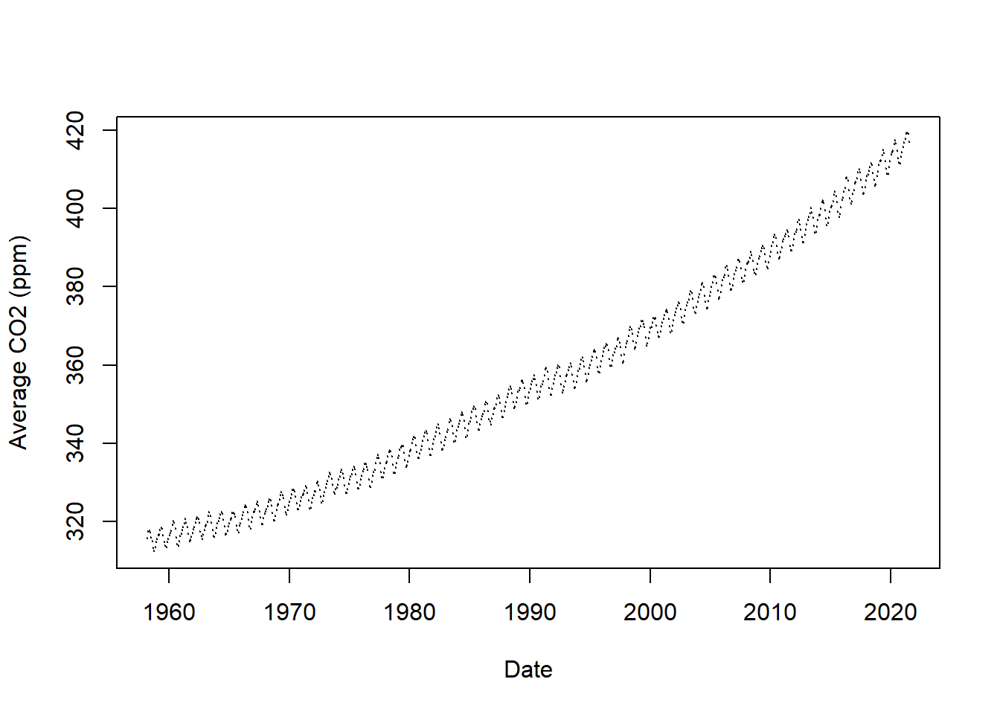

todays_date <- Sys.Date()PHW251 Problem Set 2
Question 1
Use the function Sys.Date() to get the current date. Save it in your environment.
Use the class() function to see what kind of object your date is, and then use the typeof() function to see how it is stored in R.
class(todays_date)[1] "Date"typeof(todays_date)[1] "double"Why is your saved object both a Date and a double? HINT: try using as.numeric() on the object and think about what that number means.
as.numeric(todays_date)[1] 20338This paragraph was provided in the .qmd, and I don’t have anything to add. I think it answers the question well:
Dates in R are stored as the number of days before or after 1/1/1970, which is just a number (an integer stored as a double). Because the number came from Sys.Date(), R knows it is not just a normal number and instead displays it as a date.
Look up the documentation for the lubridate function wday (short for weekday). Load the lubridate library and then pass your date object to wday() to get the day of the week as an abbreviated name e.g. “Sun” and “Mon”. You will need to pass the function a second argument to make this happen. Save the result in your environment.
?lubridate::wday()wday arguments:
wday( x, label = FALSE, abbr = TRUE, week_start = getOption(“lubridate.week.start”, 7), locale = Sys.getlocale(“LC_TIME”) )
library(lubridate)
current_wday <- lubridate::wday(todays_date, label = TRUE)
current_wdayRun this code chunk to save a vector of the seven days of the week. The levels() function returns a vector containing the names of all the levels of a factor.
days <- levels(wday(Sys.Date(), label = TRUE))
days[1] "Sun" "Mon" "Tue" "Wed" "Thu" "Fri" "Sat"Subset the vector of days to get a vector of weekdays only (Mon-Fri). You can pull out values from a vector by using a sequence of positions/indexes inside square brackets (see the lecture “Data Types and Objects in R”). Save the list of weekdays as a new object in your environment.
weekdays <- days[2:6]
weekdays [1] "Mon" "Tue" "Wed" "Thu" "Fri"Is the current day you saved in the current_wday chunk above a weekday? Check using the %in% operator. Also check if the current day is in the days vector.
current_wday %in% weekdays[1] FALSEcurrent_wday %in% days[1] TRUEQuestion 2
if/else, vector math, logical ops
Run this chunk as-is to load a dataset of Mauna Loa carbon dioxide records and plot CO2 levels over time. Importing and plotting data will be covered in an upcoming lecture–the graph is just for context.
# read in the csv file and save it as a data frame in the environment
co2 <- read.csv(file = "co2_mm_mlo.csv", skip = 51, header = TRUE, row.names = NULL)
# label the columns
colnames(co2) <- c("year","month","date","average","interpolated","trend","ndays", "UNK")
# display the data graphically
plot(x = co2$date, y = co2$average, pch = 20, cex = 0.1,
xlab = "Date", ylab = "Average CO2 (ppm)")
# view the last few rows of the data in a table
tail(co2) year month date average interpolated trend ndays UNK
756 2021 2 2021.125 416.75 415.93 28 1.02 0.37
757 2021 3 2021.208 417.64 416.14 28 0.86 0.31
758 2021 4 2021.292 419.05 416.23 24 1.12 0.44
759 2021 5 2021.375 419.13 415.71 28 0.90 0.33
760 2021 6 2021.458 418.94 416.58 28 0.65 0.23
761 2021 7 2021.542 416.96 416.58 30 0.72 0.25Before the industrial revolution, the global concentration of carbon dioxide was about 280 parts per million. Let’s see if we can express CO2 levels over time as a percentage of pre-industrial levels.
Start by extracting the average CO2 level column from the data frame. You can run this chunk as-is, since we haven’t covered data frames in detail yet.
# pull the "average" column out of the data as a vector
avg_co2 <- co2$average
# this is another way to do the exact same thing
avg_co2 <- co2[["average"]]Print out the vector avg_co2
avg_co2 [1] 315.70 317.45 317.51 317.24 315.86 314.93 313.20 312.43 313.33 314.67
[11] 315.58 316.48 316.65 317.72 318.29 318.15 316.54 314.80 313.84 313.33
[21] 314.81 315.58 316.43 316.98 317.58 319.03 320.04 319.59 318.18 315.90
[31] 314.17 313.83 315.00 316.19 316.89 317.70 318.54 319.48 320.58 319.77
[41] 318.57 316.79 314.99 315.31 316.10 317.01 317.94 318.55 319.68 320.57
[51] 321.02 320.62 319.61 317.40 316.25 315.42 316.69 317.70 318.74 319.07
[61] 319.86 321.38 322.25 321.48 319.74 317.77 316.21 315.99 317.07 318.35
[71] 319.57 320.01 320.74 321.84 322.26 321.89 320.44 318.69 316.70 316.87
[81] 317.68 318.71 319.44 320.44 320.89 322.14 322.17 321.87 321.21 318.87
[91] 317.81 317.30 318.87 319.42 320.62 321.60 322.39 323.70 324.08 323.75
[101] 322.38 320.36 318.64 318.10 319.78 321.03 322.33 322.50 323.04 324.42
[111] 325.00 324.09 322.54 320.92 319.25 319.39 320.73 321.96 322.57 323.15
[121] 323.89 325.02 325.57 325.36 324.14 322.11 320.33 320.25 321.32 322.89
[131] 324.00 324.42 325.63 326.66 327.38 326.71 325.88 323.66 322.38 321.78
[141] 322.86 324.12 325.06 325.98 326.93 328.13 328.08 327.67 326.34 324.69
[151] 323.10 323.06 324.01 325.13 326.17 326.68 327.17 327.79 328.93 328.57
[161] 327.36 325.43 323.36 323.56 324.80 326.01 326.77 327.63 327.75 329.72
[171] 330.07 329.09 328.04 326.32 324.84 325.20 326.50 327.55 328.55 329.56
[181] 330.30 331.50 332.48 332.07 330.87 329.31 327.51 327.18 328.16 328.64
[191] 329.35 330.71 331.48 332.65 333.19 332.20 331.07 329.15 327.33 327.28
[201] 328.31 329.58 330.73 331.46 331.94 333.11 333.95 333.42 331.97 329.95
[211] 328.50 328.36 329.38 330.62 331.56 332.74 333.36 334.74 334.72 333.98
[221] 333.08 330.68 328.96 328.72 330.16 331.62 332.68 333.17 334.96 336.14
[231] 336.93 336.17 334.88 332.56 331.29 331.28 332.46 333.60 334.94 335.26
[241] 336.66 337.69 338.02 338.01 336.50 334.42 332.36 332.45 333.76 334.91
[251] 336.14 336.69 338.27 338.82 339.24 339.26 337.54 335.72 333.98 334.24
[261] 335.32 336.81 337.90 338.34 340.07 340.93 341.45 341.36 339.45 337.67
[271] 336.25 336.14 337.30 338.29 339.29 340.55 341.63 342.60 343.04 342.54
[281] 340.82 338.48 336.95 337.05 338.58 339.91 340.93 341.76 342.78 343.96
[291] 344.77 343.88 342.42 340.24 338.38 338.41 339.44 340.78 341.57 342.78
[301] 343.37 345.40 346.14 345.76 344.32 342.50 340.46 340.53 341.79 343.20
[311] 344.21 344.92 345.68 347.14 347.78 347.16 345.79 343.74 341.59 341.86
[321] 343.31 345.00 345.48 346.41 347.91 348.66 349.28 348.65 346.90 345.26
[331] 343.47 343.35 344.73 346.12 346.78 347.48 348.25 349.86 350.52 349.98
[341] 348.25 346.17 345.48 344.82 346.22 347.48 348.73 348.92 349.81 351.40
[351] 352.15 351.59 350.21 348.20 346.66 346.72 348.08 349.28 350.51 351.70
[361] 352.50 353.67 354.35 353.88 352.80 350.49 348.97 349.37 350.42 351.62
[371] 353.07 353.43 354.08 355.72 355.95 355.44 354.05 351.84 350.09 350.33
[381] 351.55 352.91 353.86 355.10 355.75 356.38 357.38 356.39 354.89 353.07
[391] 351.38 351.69 353.14 354.41 354.93 355.82 357.33 358.77 359.23 358.23
[401] 356.30 353.97 352.34 352.43 353.89 355.21 356.34 357.21 357.97 359.22
[411] 359.71 359.43 357.15 354.98 353.01 353.41 354.42 355.68 357.10 357.42
[421] 358.59 359.39 360.30 359.64 357.46 355.76 354.14 354.23 355.53 357.03
[431] 358.36 359.04 360.11 361.36 361.78 360.94 359.51 357.59 355.86 356.21
[441] 357.65 359.10 360.04 361.00 361.98 363.44 363.83 363.33 361.78 359.33
[451] 358.32 358.14 359.61 360.82 362.20 363.36 364.28 364.69 365.25 365.06
[461] 363.69 361.55 359.69 359.72 361.04 362.39 363.24 364.21 364.65 366.49
[471] 366.77 365.73 364.46 362.40 360.44 360.98 362.65 364.51 365.39 366.10
[481] 367.36 368.79 369.56 369.13 367.98 366.10 364.16 364.54 365.67 367.30
[491] 368.35 369.28 369.84 371.15 371.12 370.46 369.61 367.06 364.95 365.52
[501] 366.88 368.26 369.45 369.71 370.75 371.98 371.75 371.87 370.02 368.27
[511] 367.15 367.18 368.53 369.83 370.76 371.69 372.63 373.55 374.03 373.40
[521] 371.68 369.78 368.34 368.61 369.94 371.42 372.70 373.37 374.30 375.19
[531] 375.93 375.69 374.16 372.03 370.93 370.73 372.43 373.98 375.07 375.82
[541] 376.64 377.92 378.78 378.46 376.88 374.57 373.34 373.31 374.84 376.17
[551] 377.17 378.05 379.06 380.54 380.80 379.87 377.65 376.17 374.43 374.63
[561] 376.33 377.68 378.63 379.91 380.95 382.48 382.64 382.40 380.93 378.93
[571] 376.89 377.19 378.54 380.31 381.58 382.40 382.86 384.80 385.22 384.24
[581] 382.65 380.60 379.04 379.33 380.35 382.02 383.10 384.12 384.81 386.73
[591] 386.78 386.33 384.73 382.24 381.20 381.37 382.70 384.19 385.78 386.06
[601] 386.28 387.33 388.78 387.99 386.61 384.32 383.41 383.21 384.41 385.79
[611] 387.17 387.70 389.04 389.76 390.36 389.70 388.25 386.29 384.95 384.64
[621] 386.23 387.63 388.91 390.41 391.37 392.67 393.21 392.38 390.41 388.54
[631] 387.03 387.43 388.87 389.99 391.50 392.05 392.80 393.44 394.41 393.95
[641] 392.72 390.33 389.28 389.19 390.48 392.06 393.31 394.04 394.59 396.38
[651] 396.93 395.91 394.56 392.59 391.32 391.27 393.20 394.57 395.78 397.03
[661] 397.66 398.64 400.02 398.81 397.51 395.39 393.72 393.90 395.36 397.03
[671] 398.04 398.27 399.91 401.51 401.96 401.43 399.38 397.32 395.64 396.29
[681] 397.55 399.15 400.18 400.55 401.74 403.35 404.15 402.97 401.46 399.11
[691] 397.82 398.49 400.27 402.06 402.73 404.25 405.06 407.60 407.90 406.99
[701] 404.59 402.45 401.23 401.79 403.72 404.64 406.36 406.66 407.53 409.22
[711] 409.89 409.08 407.33 405.32 403.57 403.82 405.31 407.00 408.15 408.52
[721] 409.59 410.45 411.44 410.99 408.90 407.16 405.71 406.19 408.21 409.27
[731] 411.03 411.96 412.18 413.54 414.86 414.16 411.97 410.18 408.76 408.75
[741] 410.48 411.98 413.61 414.34 414.74 416.45 417.31 416.60 414.62 412.78
[751] 411.52 411.51 413.12 414.26 415.52 416.75 417.64 419.05 419.13 418.94
[761] 416.96That’s a lot of numbers! You wouldn’t want to print all that in a report. Use the summary() function to get a more useful overview of the range of numbers in that vector.
summary(avg_co2) Min. 1st Qu. Median Mean 3rd Qu. Max.
312.4 329.4 353.4 356.4 380.5 419.1 Create a vector that expresses the Mauna Loa CO2 levels as a percentage of pre-industrial levels (280 ppm). Save it as a new vector in your environment and print out a summary.
prop_pre_industrial <- 100*(1 - (280/avg_co2))
summary(prop_pre_industrial) Min. 1st Qu. Median Mean 3rd Qu. Max.
10.38 14.98 20.77 20.91 26.42 33.19 Let’s say you’re publishing a report about climate change and you want to have two versions of it for two different audiences. In one version, you want to report carbon dioxide concentration in parts per million. In the other, you want those numbers as a percentage of pre-industrial levels.
Use if/else blocks to print a summary of Mauna Loa CO2 levels, where the format (ppm or percentage) depends on the logical indicator included in the code chunk below. Make sure you get the expected output when percentage is TRUE, and when percentage is FALSE.
library(dplyr)
co2 <- co2 %>%
mutate(
prop_pre_industrial = 100*(1 - (280/average))
)
print_summary <- function(df, percentage = FALSE) {
if(percentage == FALSE) {
print("Mauna Loa CO2 concentrations (ppm)")
summary(df$average)
} else {
print("Mauna Loa CO2 concentrations (as proportion of pre-industrial level: 280 ppm)")
summary(df$prop_pre_industrial)
}
}
print_summary(df = co2)[1] "Mauna Loa CO2 concentrations (ppm)" Min. 1st Qu. Median Mean 3rd Qu. Max.
312.4 329.4 353.4 356.4 380.5 419.1 print_summary(df = co2, percentage = TRUE)[1] "Mauna Loa CO2 concentrations (as proportion of pre-industrial level: 280 ppm)" Min. 1st Qu. Median Mean 3rd Qu. Max.
10.38 14.98 20.77 20.91 26.42 33.19 Look at the date columns in the co2 data frame (you can view the whole table by clicking on “co2” in your environment pane). The “date” column in a decimal date format. Search the web for a function within the lubridate package that can convert a decimal date into the standard date format. Use that function on the vector of decimal dates and print the result. Make sure you set the correct time zone for Hawaii (search the web for the 3-letter abbreviation of that time zone and use that string as the argument)!
co2 <- co2 %>%
mutate(
date_POSIXct = date_decimal(date, tz = "HST"),
date_standard = as_date(date_POSIXct)
)
co2_dates <- co2 %>%
select(date, date_POSIXct, date_standard)
head(co2_dates, 4) date date_POSIXct date_standard
1 1958.203 1958-03-15 23:39:07 1958-03-15
2 1958.288 1958-04-16 00:15:07 1958-04-16
3 1958.370 1958-05-16 00:19:26 1958-05-16
4 1958.455 1958-06-16 00:02:52 1958-06-16Question 3
Use a for loop to print out the result of multiplying the numbers 1-10 by 3.
numbers <- 1:10
for(i in numbers) {
numbers[i] <- 3 * i
}
print(numbers) [1] 3 6 9 12 15 18 21 24 27 30Question 4
Use a while loop to do the same thing. It’s easy to accidentally create infinite loops; if your chunk takes more than a couple seconds to run, press the red square in the top right corner of the chunk to abort the loop.
numbers <- 1:10
i <- 1
while (i <= length(numbers)) {
numbers[i] <- 3 * numbers[i]
i <- i + 1
}
print(numbers) [1] 3 6 9 12 15 18 21 24 27 30Question 5
If you haven’t created a GitHub account yet, do it now. Paste a link to your GitHub profile below:
https://github.com/EvalstacE
Question 6
You’re working on a group coding project with your classmates that’s due soon. After a weekend away from your computer, you open R Studio to start working. What is the first git command you should run?
I would run this in gitbash first:
git fetch origin
git log HEAD..origin/main –oneline
That will give me a list of my classmates’ commits and changes before pulling them in locally.
Then I would run this in gitbash if I want to make sure my local drive version is up to date with the online version:
- git pull origin main
I could also use the “Pull” directly in RStudio instead of doing that through gitbash.
Question 7
You write some new code, save your Qmd file, commit your changes to your local repository, and then go eat dinner. While you’re eating, your teammate sends you a message asking where your new code is. What did you forget to do?
You forgot to “Push” those changes after committing.